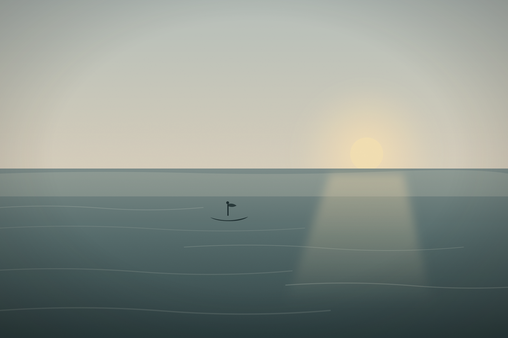
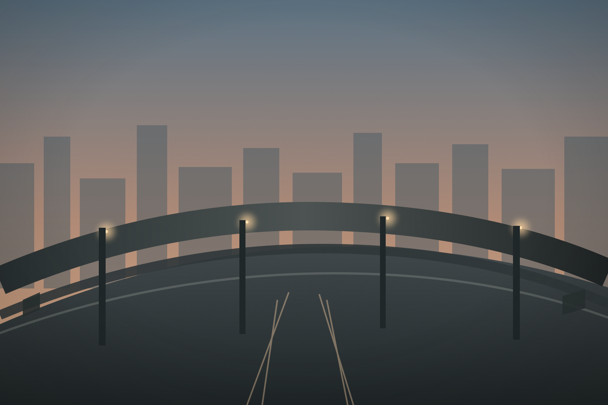

Album 01 · 2025 秋
山海之间
Between Mountains and Sea
从苍山的第一缕雾，到东海最后一班归船。十二天的沿海旅行， 记录下山脊、潮汐与晚归的灯火。
The Archive · 2024—2026

Between Mountains and Sea
从苍山的第一缕雾，到东海最后一班归船。十二天的沿海旅行， 记录下山脊、潮汐与晚归的灯火。

City Fragments
在蓝色时刻的楼宇之间，寻找城市不被打扰的间隙。 天桥、雨夜、末班地铁，都是这座城市的注脚。

The Light of Ordinary Days
光落在桌面、窗帘和一杯将凉的咖啡上。没有远方，也值得被认真记录。 这是关于家、午后与缓慢时刻的一册。

Beyond the Snow Line
从长白山的第一场雪，到阿那亚结冰的海，再向北到漠河的炊烟。 最冷的地方，往往藏着最暖的光。
Vol. 02 正在筹备中 · 预计 2027 年春